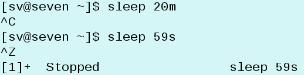
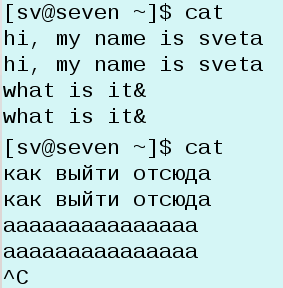
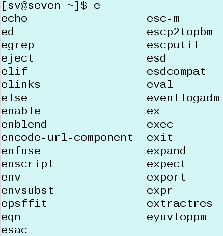
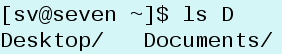
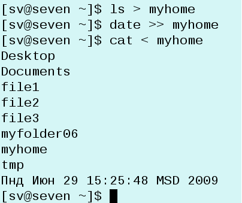

Помните команду sleep из предыдущего урока? Если ввести что-то наподобие sleep 100, то может понадобиться прервать выполнение команды. Сделать это можно с помощью сочетания клавиш Ctrl + C. Есть много процессов командной оболочки, прерывание которых обеспечивается сочетанием клавиш Ctrl + D или Ctrl + C или Ctrl + Z.

Другой пример, где может понадобиться прерывание, — это команда cat. Когда она используется без параметров, то выводит на экран то, что вводит пользователь.

Работая в командной строке, очень часто требуется повторить ранее введенную команду. Набирать ее снова не слишком рационально. Для повтора ранее введенных команд в командной оболочке Linux возможна прокрутка команд с помощью стрелок вверх и вниз на клавиатуре. Происходит прокрутка команд назад или вперед. Когда появится нужная команда следует нажать Enter и команда будет повторена. Понятно, что при этом можно видоизменить команду (например, изменить параметр).
Автозавершение позволяет при нажатии определенной клавиши автоматически дописывать начатую команду. Это очень удобное свойство командной оболочки, т.к позволяет не знать команды и параметры наизусть и экономит время при вводе. Автозавершение в командной оболочке Linux срабатывает при нажатии клавиши Tab (табуляция). При этом автозавершение сработает лишь в том случае, если команда (параметр) определяется однозначно.
Например, для просмотра содержимого рабочего стола не обязательно писать ls Desktop. Достаточно написать ls De и нажать клавишу Tab — оболочка допишет слово сама. Однако если написать ls D и нажать Tab, то ничего не произойдет, т. к. обычно в домашнем каталоге пользователя есть два каталога, начинающиеся с буквы D, и какой из них имеется ввиду командная оболочка определить не может.
Бывает что мы не знаем что вводить далее после нескольких букв и командная оболочка после одиночного нажатия клавиши табуляции ничего не дополняет. В таком случае может помочь двойное нажатие Tab, после которого на экране появляется перечень всех возможных вариантов. Например, мы можем забыть как правильно писать команду echo. Но если введем букву e и нажмем два раза Tab, то увидим перечень команд, в котором можем узнать требуемую нам команду.

Тоже самое можно использовать в случае ls D. В этом случае выведется список каталогов, начинающихся с буквы D.

Ctrl + U отменяет введенную в текущей строке команду. Если команда длинная, то использовать Ctrl + U куда удобнее, чем стирать буквы по порядку с помощью клавиши Backspace.
Есть и другие сочетания клавиш, облегчающие работу с командной строкой (например, Ctrl + W – удаление слова).
Когда мы работаем в командной оболочке, то работаем в интерактивном режиме: спрашиваем и получаем ответ. При этом ответы оболочки не сохраняются, но что делать, если результат работы команды требуется сохранить? На этот случай командная оболочка поддерживает такие функции как перенаправление стандартного ввода и вывода. Ввод можно направить не на экран, а в файл.
Аналогично, данные можно ввести не с помощью клавиатуры, а получить из файла.
Перенаправление осуществляется с помощью знаков < и >. Угол указывает куда направить, а обратная сторона (широкая) — откуда взять. Например, команда cat > fileX запишет все, что введет пользователь в процессе работы программы cat, в файл с именем fileX. А вот команда cat < fileY сделает обратное — выведет на экран содержимое файла fileY.
Рассмотрим пример более практического использования перенаправления. Допустим нам надо оставить на потом сведения о содержимом домашнего каталога. Для этого мы перенаправим вывод команды ls в файл (например, ls > myhome). Еще хорошо бы, чтобы в этом файле содержалась дата когда был взят этот "срез". Для этого допишем в файл результат команды date, которая позволяет получить дату и время (date >> myhome). Обратите внимание, что для дополнения файла используется два знака >; если использовать один знак, то произойдет перезапись (старые данные сотрутся и заменятся новыми). Теперь предположим, что через какое-то время потребовалось узнать, что же было в папке ранее: для этого достаточно выполнить команду cat < myhome.
